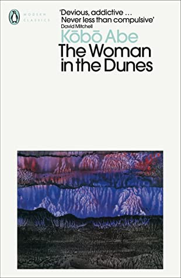
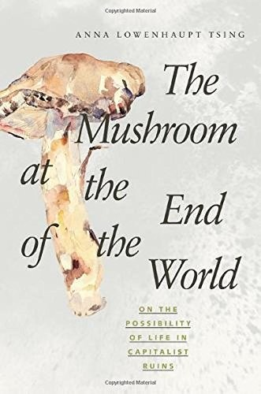
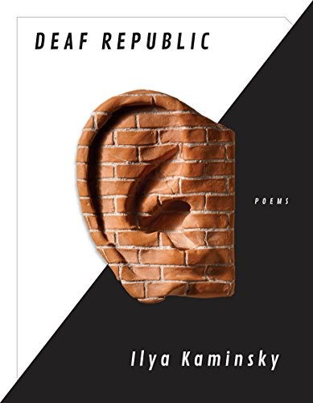
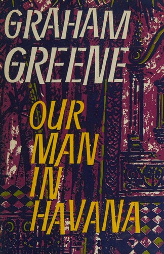
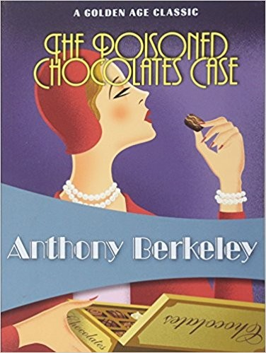

weekly digest
Week 2026-33
Recommendations for the week of 10 August 2026.
Three fresh growth edges this week, none of them the uncertainty vein the shelf has leaned on lately. The translated non-Western literary shelf reaches Japanese fiction outside crime — an austere, rigorously sustained existential parable about labour, entrapment, and meaning. Narrative nonfiction opens a genuinely new domain in anthropology and ecology, following one wild mushroom to ask how anything survives in capitalism's ruins, built as a deliberately non-linear patchwork of ideas. And the near-empty poetry shelf gains a book-length sequence that is also silent political theatre — formally strange, morally serious, entirely unconsoling. The comfort picks stay in the well-loved veins but reach for fresh authors: consciousness-questioning hard SF, a savagely comic spy novel from a foundational master, and a Golden-Age mystery whose whole trick is structural — one crime, six contradictory solutions.
Highbrow



Lowbrow


